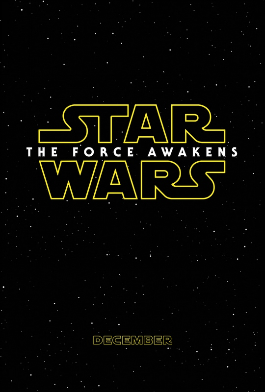

von Eric Zerm

Star Wars VII Teaser Poster (© Walt Disney, Lucasfilm Ltd.)
(ez) – Prequels – also Geschichten, die zeitlich vor bereits bekannten Werken angesiedelt sind – erleben spätestens seit der Star Wars-Prequel-Trilogie Die dunkle Bedrohung (1999), Angriff der Klon-Krieger (2002) und Die Rache der Sith (2005) einen großen Boom. Die Star Wars-Fans hatten damals 16 Jahre auf ein weiteres Kinoabenteuer in der »Galaxis, weit weit entfernt...« gewartet. In der Zwischenzeit waren auch viele Star Wars-Abenteuer in Form von Romanen erschienen, und dieses Universum war immer größer und komplexer geworden. Nach dem Ende der Prequel-Trilogie dehnte sich das Star Wars-Universum vor und nach den ursprünglichen Episoden IV bis VI (1977 – 1983) durch immer neue Comics und Romane noch weiter aus. Durch die neu hinzugekommenen Helden gab es nun noch viel mehr zu erzählen. Im April 2014 – inzwischen liefen die Vorbereitungen für J. J. Abrams Kino-Fortsetzung der ursprünglichen Trilogie – zogen die Verantwortlichen die Notbremse. Die meisten Comic- und Buchgeschichten wurden aus der offiziellen Star Wars-Historie gestrichen und ins Reich der »Legenden« verbannt. Die Drehbuchautoren hatten damit wieder freie Bahn.
Die Vergangenheit ist wieder offen
Geheimnisvoll wird es im ersten längeren Trailer für Star Wars: Episode VII – Das Erwachen der Macht. »Die Macht ist stark in meiner Familie«, hört man Luke Skywalker sagen. »Mein Vater hat sie, ich habe sie, meine Schwester hat sie... auch du besitzt diese Macht«. Wen meint Luke damit? Wären die seit Anfang der 1990er Jahre erschienenen Star Wars-Romane noch Teil des offiziellen Kanons, könnten die Fans jetzt ausführliches Quellenstudium betreiben. Vielleicht würden sie in den Geschichten, die zeitlich nach Die Rückkehr der Jedi-Ritter (Episode VI) angesiedelt sind, irgendwann fündig werden. Jetzt aber sind die vergangenen 30 Jahre von Luke Skywalker (Mark Hamill), Han Solo (Harrison Ford), Prinzessin Leia (Carrie Fisher) und der ganzen Neuen Republik wieder ein unbeschriebenes Blatt. Die Kreativen können sie von neuem erfinden.
In einer ähnlich komfortablen Situation war Star Wars-Vater George Lucas, als er Mitte der 1990er Jahre seine Prequel-Trilogie anging. Abgesehen von vagen Andeutungen und zwei wichtigen Dialogen zwischen Luke Skywalker, seinem Meister Yoda und dem Geist Obi-Wan Kenobis (Alec Guinness) in Die Rückkehr der Jedi-Ritter war nichts über die Vergangenheit seines Universums verankert. Das heißt, fast nichts. Der Schriftsteller Timothy Zahn hatte seine Roman-Trilogie Erben des Imperiums, Die dunkle Seite der Macht und Das letzte Kommando (1991 - 1993) fünf Jahre nach dem Ende von Die Rückkehr der Jedi-Ritter beginnen lassen. Aber im Laufe seines beliebten Zyklus um den Kampf des genialen imperialen Großadmirals Thrawn gegen die Neue Republik hatte er einen Teil der Vergangenheit des Star Wars-Universums und die legendären Klon-Kriege definiert. George Lucas und seine Co-Autoren ignorierten das kurzerhand und schrieben ihre eigene Star Wars-Historie. So liegen die Klon-Kriege bei Timothy Zahn länger zurück als in den Kino-Episoden I bis III. Als Leia im Roman Die dunkle Seite der Macht auf dem Planeten Honogr von einer Katastrophe während der Klon-Kriege erfährt, liegt diese viel länger zurück, als das nach der später offiziellen Star-Wars-Zeitrechnung sein könnte. Die Schriftsteller, die Zahn in den kommenden Jahren nachfolgten, bauten auf seinen Geschichten auf und definierten weitere Dinge aus der Star-Wars-Historie. So beschreibt zum Beispiel Kevin J. Andersons in seiner Trilogie Flucht ins Ungewisse, Der Geist des dunklen Lords und Die Meister der Macht einen dunklen Lord namens Exar Kuhn, dessen Lehren auch Anakin Skywalker/Darth Vader zum Sith-Lord gemacht haben. Und es gibt in den Romanen eine Wissenschaftlerin namens Qui Xux, die für das Imperium den Todesstern entworfen hat. Auch das ignorierten Lucas und seine Co-Autoren.
Aber gehen auch in der realen Welt ein paar Schritte zurück ins Jahr 1983...
Explodierende Produktionskosten
»Vor langer Zeit, in einer Galaxis weit, weit entfernt...« Bevor diese berühmten Worte im Jahr 1999 den Beginn einer zweiten Star Wars-Trilogie einläuteten, hatte George Lucas, der Erfinder dieser Galaxis, einen langen Anlauf genommen. »Bereits 1983, als Die Rückkehr der Jedi-Ritter in den Kinos gefeiert wurde, verkündete Star Wars-Schöpfer George Lucas, dass das erfolgreichste Weltraum-Abenteuer aller Zeiten noch lange nicht beendet sei. »Doch mit den explodierenden Produktionskosten in Hollywood rückte die Verwirklichung dieses Vorhabens in weite Ferne.« (cinema 5/1994).
Deshalb legte Lucas das Ganze vorerst auf Eis und trieb mit seiner Firma Industrial Light & Magic (ILM) die Entwicklung neuer Tricktechnologien voran. »Als Spielwiese diente ihm dabei unter anderem die TV-Serie Young Indiana Jones, wo er seine Helden durch Schauplätze scheuchte, die größtenteils digital am Computer entstanden waren – eine Methode, mit der sich gerade bei Science-Fiction-Sujets viel Geld sparen lässt.« (cinema 5/1994).
Quantensprung der Tricktechnik
Einen wahren Quantensprung markierte dann die Arbeit von ILM für Steven Spielbergs Dinosaurier-Spektakel Jurassic Park (1993). Das Buch Star Wars – Die Filme von Oliver Denker (Heyne-Verlag, München 1996) zitiert eine Äußerung von Lucas nach einer Testvorführung von Jurassic Park: »Als ich die Tests auf der Leinwand sah, hatte ich Tränen in den Augen. Es war einer dieser Momente in der Geschichte, wie bei der Erfindung der Glühbirne oder dem ersten Telefonanruf. Eine Lücke wurde geschlossen, und die Dinge werden niemals mehr dieselben sein.«
Für die »Special Editions« der ursprünglichen drei Filme (1977 – 1983), die Lucas zum 20. Star Wars-Geburtstag 1997 in die Kinos brachte, setzte er die neue Computer-Tricktechnik erstmals für die Sternen-Saga ein. Die spektakulärste Ergänzung wurde das Treffen zwischen dem Schmuggler Han Solo und dem Unterwelt-Boss Jabba the Hutt. Bei der Produktion des ersten Films 1977 war Jabba noch von einem Schauspieler dargestellt worden. Die Szene war in der finalen Fassung des Films nicht mehr enthalten. Für die »Special Editions« fügte ILM nun eine digitale Fassung des schneckenartigen Hutten aus Die Rückkehr der Jedi-Ritter ein, und die Szene kam in den Film.
Die Prequels entstehen
Schon im Herbst 1994 – knapp drei Jahre vor den »Special Editions« – hatte George Lucas angekündigt, eine zweite Star Wars-Trilogie in die Kinos zu bringen, die die Vorgeschichte seiner bisherigen Filme erzählt. Das Casting für alle drei Teile begann im Frühjahr 1996. (Star Wars – Die Filme, Oliver Denker, Heyne-Verlag, München 1996). Produktionsdesigner Gavin Bocquet arbeitete schon seit dem Frühjahr 1995 mit einem »kleinen Team von Illustratoren an Designs für neue Kreaturen, Fahrzeuge, Props und Kostüme«. (Star Wars – Die Filme). Dabei nahmen sich die Designer vor, den bekannten stets etwas verwittert wirkenden Star Wars-Look quasi zurückzuentwickeln. Es entstanden Designs, die zugleich vertraut und anders wirkten. »War das Design der alten Trilogie vornehmlich an geraden, geometrischen Formen orientiert gewesen, man denke nur an die keilförmigen Sternzerstörer des Imperiums oder die X-Flügler der Rebellen, nehmen sich die Raumschiffe und Setdekorationen des Prequel-Films runder und organischer aus, ein wenig im Stil alter Oldtimer, die Autofan Lucas als Inspiration heranzog.« (Moviestar – 4/99).
Einen direkten Design-Bezug von alter und neuer Trilogie beschreibt der Artikel »Making of Episode I« auf starwars-union.de. »Gavin Bocquet und seine Crew haben für Palpatines Quartier eine Kulisse aus sattem Burgunder und Scharlachrot gebaut. Die (rote) Kaisergarde des Imperators (Palpatine mehr als 30 Jahre später) in ,Die Rückkehr der Jedi-Ritter' hatte sie zu dem Farbentwurf für die Bühne inspiriert.«
Etwas, das viele Beteiligte besonders reizte, war die Möglichkeit, in der Prequel-Trilogie erstmals Jedi-Ritter mit ihren Star Wars-typischen Laserschwertern in der Blütezeit ihres Ordens zu zeigen. George Lucas: »Bis zu diesem Zeitpunkt hatten wir noch nie einen richtigen Jedi-Ritter in Aktion gesehen. Wir haben alte Männer gesehen, Jungen und Figuren, die halb Maschine, halb Mensch waren, aber nie einen echten Jedi.« (starwars-union.de). Schon für Episode I entstand so ein Duell zwischen drei Kämpfern, in dessen Choreographie Stuntman Nick Gillard Elemente aus Fechten, Kendo, Tennis und sogar Holzfällen mit einbaute. Zudem waren die Schwertstreiche und Bewegungsabläufe viel schneller als in den älteren Filmen.
Höhepunkt der neuen Trilogie wurde in Episode III – Die Rache der Sith schließlich ein Duell zwischen den einstigen Freunden Obi-Wan Kenobi (Ewan McGregor) und Anakin Skywalker (Hayden Christensen) vor der apokalyptischen Vulkan-Kulisse der Welt Mustafar. Im Roman zu Die Rückkehr der Jedi-Ritter von James Kahn (Goldmann, München 1983) hatte der Geist Obi-Wan Kenobis dieses Duell und sein bitteres Ende in einem Gespräch mit Luke Skywalker schon einmal erwähnt. »Wir kämpften... dein Vater stürzte in eine Schmelzgrube. Als er sich aus der glühenden Masse herausgekrallt hatte, war der Wandel für immer eingesengt – er war Darth Vader, ohne jede Spur von Anakin Skywalker.« Episode III zeigt dieses Schlüsselereignis der Star Wars-Saga als Kampf wie im Vorhof der Hölle.
Fortsetzung folgt...
Weiterführende Informationen zum Thema:
https://www.youtube.com/watch?v=JgyFviViQxc – Star Wars VII Trailer (deutsch)